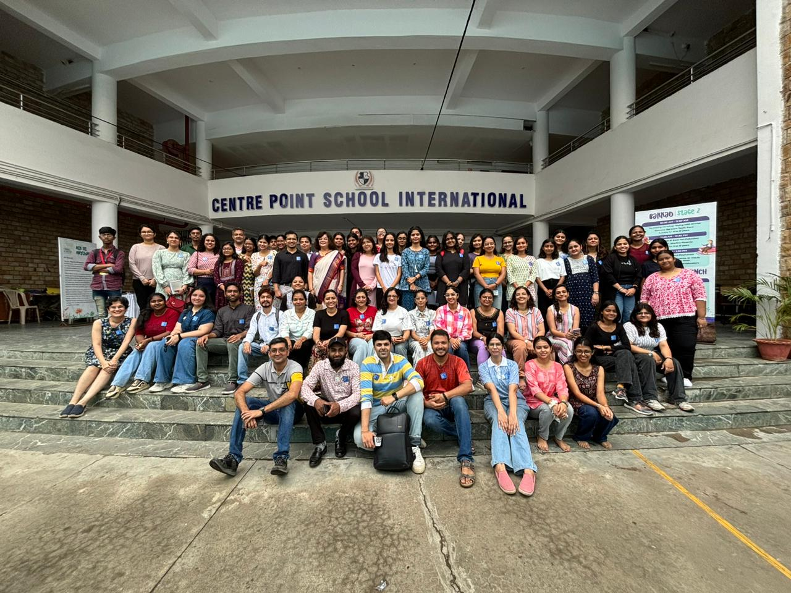

Work Experience

- Executive Assistant – College Fest
- Supported the President with admin tasks
- Handled logistics, hospitality, volunteer management
- Secured ₹60K sponsorships and managed over 100 volunteers
- Peer Mentor
- Mentored students on academics and communication
- Conducted group discussions and workshops
Volunteering
- 'S' for Storytelling Festival – Communication & Engagement
- Vidarbha Literary Festival – Event coordination and outreach
Leadership
- Head of Cinema Club – Managed 30 volunteers, 15+ screenings & workshops
- Editor – College Magazine – Edited, strategized, and published 2 editions